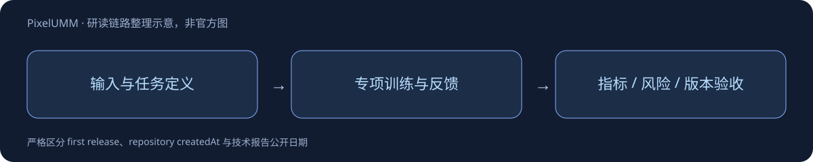

PixelUMM

一页速览
| 项目 | 当前证据 |
|---|---|
| 日期 | 2026-09-30 |
| 归属 | nvidia · 专项支线 |
| 关键事实1 | 约15.20B |
| 关键事实2 | Qwen3-8B语言主干 |
| 关键事实3 | RGB 16×16patch；迭代去噪 |
Pixel-space 统一的目标与代价
image用空间patch，video用时空tubelet，经线性projection进入共享backbone；共享attention加任务专用参数，同时支持自回归文字与flow-matching像素生成。model card给出15199672064参数和固定Qwen3-8B revision。RGB16×16patch是卡中图像规格，不能机械推广为所有视频tubelet规格。

encoder-free不等于完全没有视觉映射，而是不依赖单独的预训练视觉encoder。是否节省视觉上下文，必须比较相同分辨率/帧数/质量与真实计算预算，不能仅从结构示意推导端到端速度。
日期与证据
报告v1为2026-09-29 21:59:07 UTC，即北京时间9月30日。这一日期代表研究报告首次公开；HF10月1日createdAt是权重仓库创建时间，不能据此断言权重提前公开。
对 Agent Training 的判断
以上是基于已读材料的研究判断，未在本机复现模型推理或训练结果。
官方来源与导航
- [S1] HF Model Card
- [S2] Tech Report
📊 相关可视化: 中文研究Poster